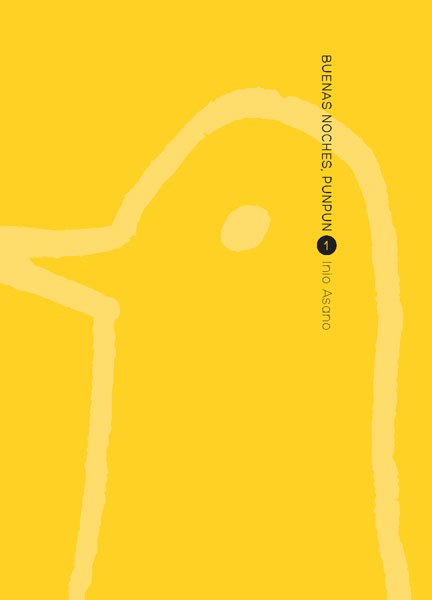
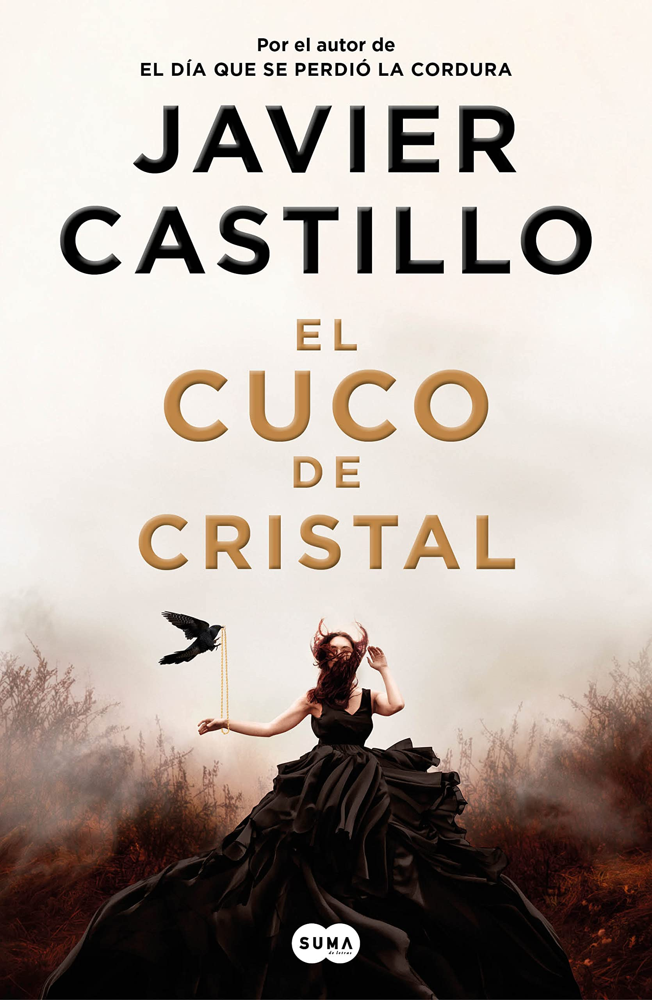
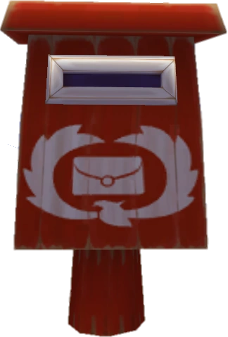

|  |
Oyasumi PunPun - Tomo 1 Punpun no es el típico estudiante de primaria. Pese a que siente los mismos impulsos que sus compañeros, empieza a descubrir a las chicas y el sexo, la situación familiar no es la más estable y deberá enfrentarse a ello como buenamente pueda… y en principio, eso es visualizándose como un ave amorfa en un entorno extraño. Precio: 8.00€ |
|  |
El cuco de cristal Nueva York, 2017. Cora Merlo, médico residente de primer año, sufre un infarto fulminante que la obliga a un trasplante de corazón. Aún convaleciente la joven recibe la visita de una extraña mujer con una enigmática oferta: pasar unos días en Steelville, un pequeño pueblo de interior, para conocer la vida de su hijo Charles, el donante de su corazón. Precio: 19.90€ |
Cada mes, te ofrecemos un clásico literario para que agreges a tu lista de lecturas. Al final del mes, se celebrará en nuestra librería una reunión de lectores para comentarlo. ¿Te animas a probarlo?
Lectura del mes:
¿Tienes alguna sugerencia o recomendación? Puedes dejar estas en nuestro buzón y nuestro cartero nos la hará llegar <3
© La Rana Hyliana.